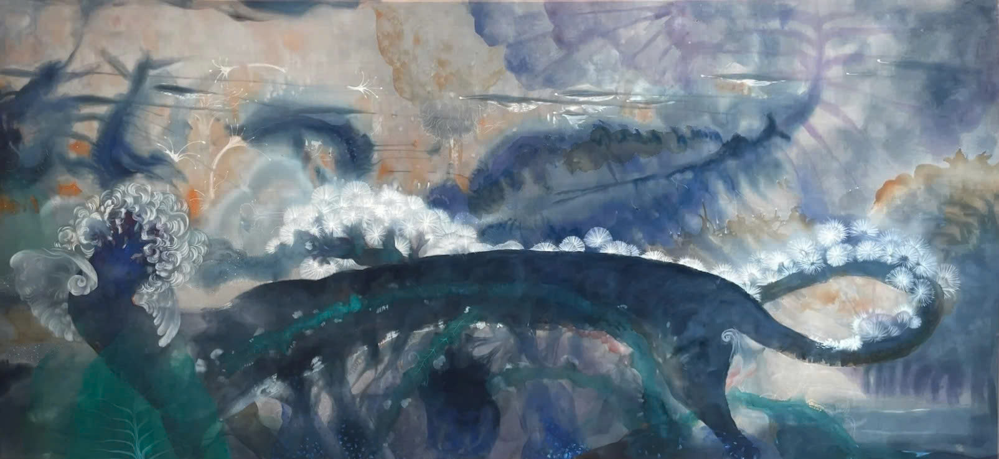
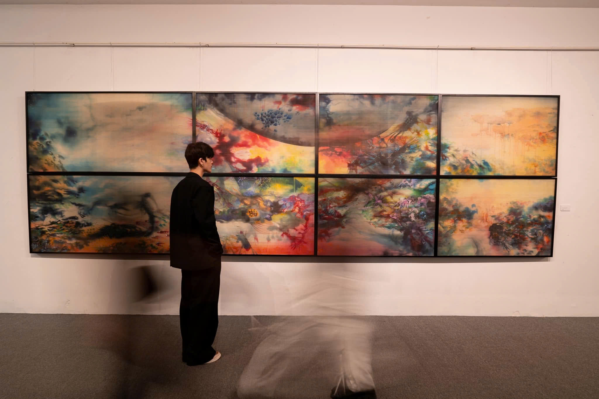

Vùng Sống 2
Nguyễn Văn Trinh
Màu nước trên lụa
100 × 200 cm · 2023
Từ một phần nguyên tác,
một hành trình mới trên lụa.


Từ không gian nghệ thuật…
Tư liệu triển lãm bộ Vùng Sống
…đến từng thước lụa.
Họa tiết được in lên lụa,
tiếp nối sắc màu của tranh.
Một chi tiết.
Chuyển thể từ một phần Vùng Sống 2
VÙNG SỐNG 2
Nhiều diện mạo.
Nghệ thuật
để mang theo.
100% lụa tơ tằm Bảo Lộc
Satin 16 momme · Viền thủ công


The Art
of Silk
Vùng Sống 2
lumierearts.com